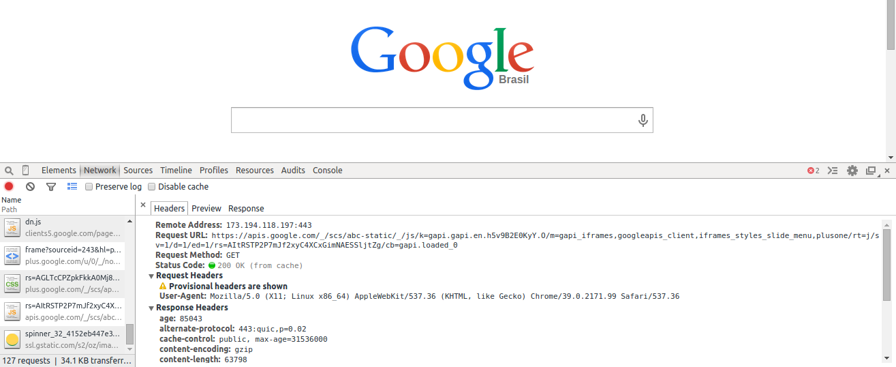

Essa dúvida já passou pela cabeça de muita gente e creio que se você é iniciante e já ouviu esses termos alguma vez também deve estar se confundindo. É normal essa confusão no começo, afinal você cria aplicações para consumir API’s ou constrói/melhora API’s o tempo todo no seu dia-a-dia, então você escuta esses termos direto.
Mas afinal, qual a diferença entre URL e URI?
O Protocolo HTTP
Não da para abordar o assunto URI, URL, URN sem explicar um pouco sobre o HTTP. Se você já manja sobre HTTP, pode pular para a parte de URL.
O protocolo HTTP é um conjunto de regras de transmissão de dados que permitem que máquinas com diferentes configurações possam se comunicar com um mesmo “idioma”. A especificação do Protocolo você encontra aqui e o conhecimento sobre o assunto vai mais além, envolvendo Verbos, Cabeçalhos HTTP, etc.
Esse protocolo é baseado em requisição e resposta entre client e server. Quando o client (Ou user agent) solicita um recurso na internet ele envia um pacote de dados com cabeçalhos (Headers) a um URI (Ou URL) e o destinatário (Provavelmente um Servidor) vai devolver uma resposta que pode ser um recurso ou outro cabeçalho.
Para ver como tudo isso acontece faça o seguinte:
Abra uma nova aba no seu navegador - No meu exemplo estou usando o Chrome e vou acessar o Google -, pressione F12 ou abra as Ferramentas de Desenvolvedor e clique em Network e acesse um site qualquer. Você vai reparar que serão baixados alguns arquivos, clique em qualquer um e clique em headers. Vai aparecer algo igual a isso:

Ali você consegue identificar o endereço remoto (173.194.118.197:443), a URL que foi requisitada, o método que foi utilizado (GET), o Status Code (200 - OK) e mais um monte de informação - Incluindo os cabeçalhos da resposta (Response Headers).
E é assim que acontece a comunicação.
No momento não vou aprofundar no Protocolo HTTP para voltarmos ao foco do post, porém vou citar mais algumas coisas legais na próxima postagem. ;)
URL – Uniform Resource Locator
Em português: Localizador de Recursos Universal e como o próprio nome diz, se refere ao local, o Host que você quer acessar determinado recurso. O objetivo da URL é associar um endereço remoto com um nome de recurso na Internet.
Exemplo de URL
- woliveiras.com.br
- woliveiras.org
- woliveiras.xxx
Ou seja, acessando esses endereços você cai no servidor onde está minha página - Só exemplo - e o servidor vai se encarregar de processar sua solicitação.
A URL é parte da URI.
URN – Uniform Resource Name
Em português: Nome de Recursos Universal é o nome do recurso que será acessado e também fará parte da URI.
- home.html
- contato.php
- servicos.html
É comum associarmos URN a página que estamos acessando.
Outro ex.: /api/v01/exemplo/usuarios
URI – Uniform Resource Identifier
Em português: Identificador de Recursos Universal, como diz o próprio nome, é o identificador do recurso. Pode ser uma imagem, uma página, etc, pois tudo o que está disponível na internet precisa de um identificador único para que não seja confundido.
Exemplos de URI
- http://woliveiras.com.br/desenvolvedor-front-end/
- http://pt.wikipedia.org/wiki/Hypertext_Transfer_Protocol
Pra ficar mais fácil de entender, pois sei que deve ter dado um nó agora:
A URI une o Protocolo (http://) a localização do recurso (URL - woliveiras.com.br) e o nome do recurso (URN - /desenvolvedor-front-end/) para que você acesse as coisas na Web.
Alguma dúvida ou dica para melhorar o post? Comenta ae!